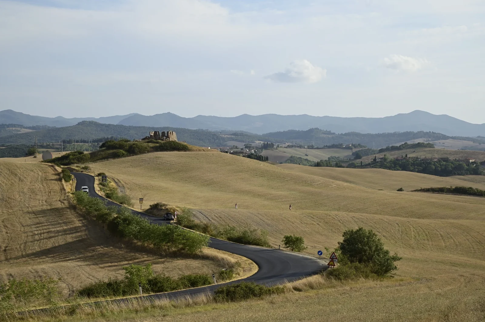
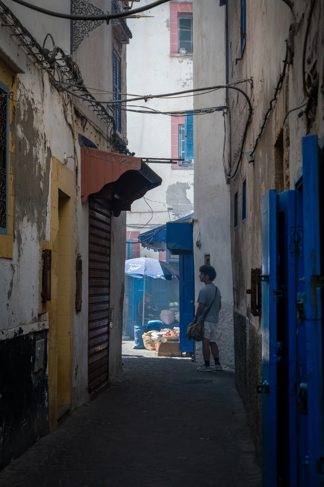
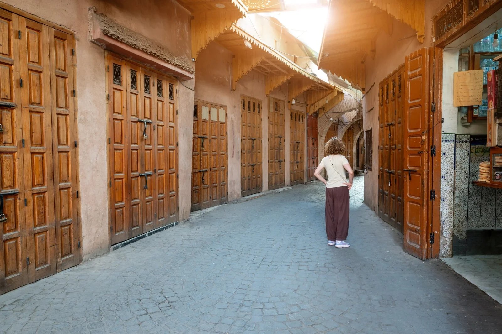

Work
Selected Work
Photographs about places, people and the moments that ask me to slow down.

Before the Horizon

Not Yet

Photographs about places, people and the moments that ask me to slow down.


